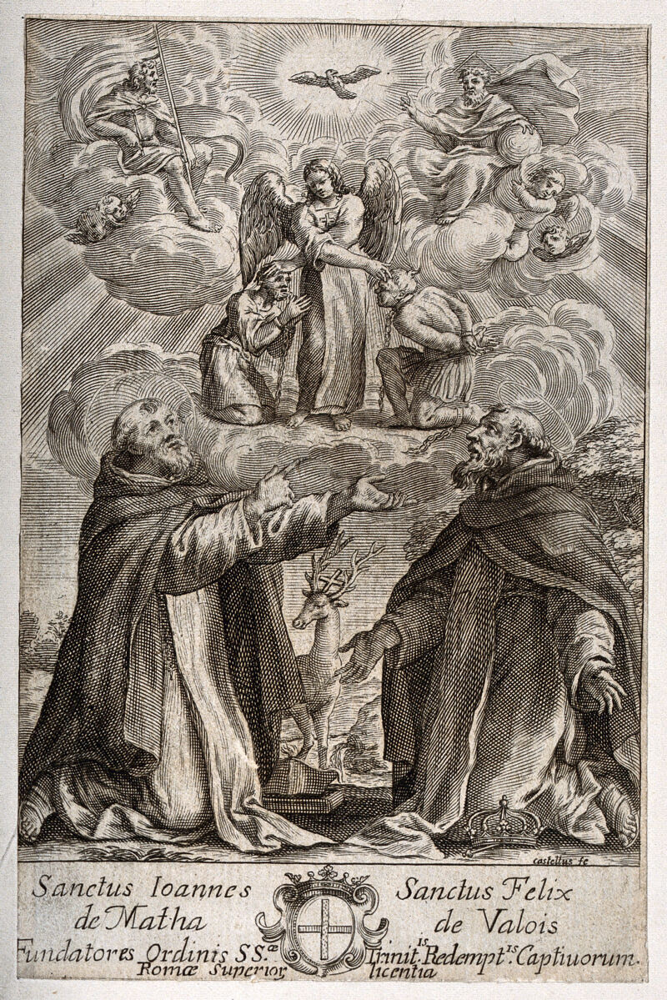

Vocation
How to Join the Trinitarians
The Trinitarian family is one: clerics, brothers, nuns, and lay members of the Third Order, all consecrated to the Most Holy Trinity and the redemption of captives. There is a path for every state of life.
Religious Life
For those called to priesthood, brotherhood, or consecrated life, the Trinitarian Order welcomes vocations to its clerical and contemplative branches. Formation, prayer, and the work of redemption shape the daily life of the friars and nuns.
The Third Order (Lay)
Through baptism, Trinitarian lay persons are united with Christ and share in His mission. Inspired by the Rule of St. John de Matha and guided by the English handbook The Trinitarian Way (2010), members consecrate themselves in a special way to the Most Holy Trinity — living the Gospel and the Trinitarian charism in the world, in family and society.

Why join?
- A 900-year charism. Belong to an Order founded in 1198 by St. John de Matha and St. Felix de Valois, approved by Pope Innocent III — consecrated to the Most Holy Trinity and the redemption of captives.
- A Trinitarian rhythm of life. A daily Trisagion, consecration to the Trinity, and a spirituality of charity and mercy woven into ordinary life — as outlined in The Trinitarian Way handbook.
- Family & community. Walk “in the footsteps of Christ” alongside a global Trinitarian family of clerics, nuns, brothers, and lay members.
- Mission with meaning. Extend Christ’s “plan of Love” through prayer, works of mercy, and the ongoing redemption of the captives of our day.
- An accessible lay path. The Third Order lets lay people and families live the charism without leaving the world.
Take the next step
Called to something more? Discern your vocation with the Trinitarians — or take the first step into the lay Third Order today.
Join the Third Order →Join-path links are to the official Trinitarian Order and Third Order sites. This site is informational and not an official publication of the Order.